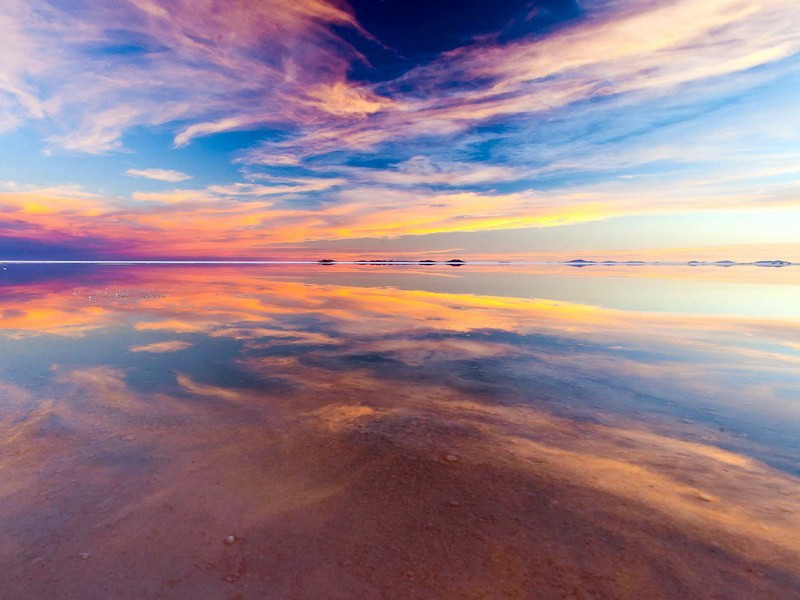

×

Bolivia
Климат
Среднемесячные температуры летом (декабрь-февраль) колеблются от +21-24 С над равнинными участками до +3 C на склонах Кордильеры. Зимой (май-август) средняя температура составляет от +19 до -1 С соответственно. При этом температура зимой в горах может опускаться до -20 С. Осадков выпадает от 150 до 2000 мм в год, период дождей длится с октября-ноября по март. Сухой сезон с апреля по сентябрь. В горных районах осадки выпадают неравномерно. На восточных склонах гор выпадает до 1500-200 мм дождя, в то время как некоторые изолированные межгорные долины и западные склоны, а также равнины Льяноса, получают не более 300 мм осадков в год. При этом на участках, порой отстоящих друг от друга по прямой на расстояние не больше 10 км, погодные условия могут кардинально отличаться. Часты сильные стоковые ветра с гор, а также мощные ветра, несущие тучи пыли, приходящие на равниннные участки страны с бассейна Амазонки.
____